TreeSummarizedExperiment
SummarizedExperiment

TreeSummarizedExperiment
Huang et al. F1000, 2021

Alternative data container: phyloseq
Current standard for (16S) microbiome bioinformatics in R (J McMurdie, S Holmes et al.)

Open microbiome data
Available in TreeSummarizedExperiment format:
- EBI Mgnify database: MGnifyR package
- Human studies: curatedMetagenomicData (Pasolli et al Nat Meth 2017)
- Other studies: microbiomeDataSets (Lahti et al.)
- R package data (mia, miaViz, miaTime)
Demo
We have already loaded HintikkaXOData
Now, let us look at the data components
Task
Explore TreeSE components (OMA 17.2); extract and visualize:
(assays, colData, rowData)
rowTree, colTree
metadata
Data import
Data import from source files
Construct a new TreeSE object from scratch, starting from original data files.
Taxonomic profiling from 40 rat Cecum samples including 12706 OTUs from 318 species
Diet comparison with High/Low fat diet and xylo-oligosaccaride supplementation.
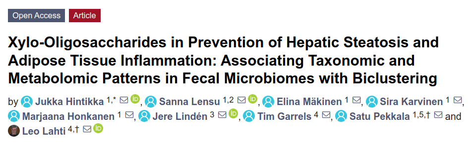
Data import from source files
Construct a new TreeSE object from scratch, starting from original data files.
OMA, Chapter 18 (18.3.1-3) includes additional tips
Read in the CSV files. You can use shared example data files on the cloud server; see in R:
dir("shared/data")Data files include sample data (
coldata.csv); taxonomic table (rowdata_taxa.csv); taxonomic abundance table (assay_taxa.csv). Load these in your RStudio session with e.g.read.csv("shared/data/coldata.csv")Construct TreeSE in R (see OMA Ch. 2)
Data import from other source formats
OMA, Chapter 18 (18.3.4)
Follow the biom file example in OMA 2.3.2.1
Example data files are available on the cloud server; see in R:
dir("shared/data")
Data conversions
OMA, Chapter 18 (18.3.5)
TreeSummarizedExperiment and phyloseq are alternative containers for microbiome data in R. It is useful to know how to convert between these two formats.
Convert your TreeSE into phyloseq
Convert the phyloseq back to TreeSE
Data exploration
OMA, Chapter 18 (18.4.3 - 18.4.5)
- Optional: if time will allow, you can try out these as well
Task
TreeSE/MAE, exploration & analysis, how to find more
mia & miaViz R packages:
Intro to miaverse (mia, miaViz, miaTime, miaSim, OMA)
2-3 simple examples to summarize & visualize data from TreeSE container
Assays & transformations
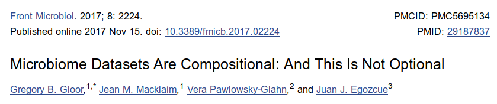
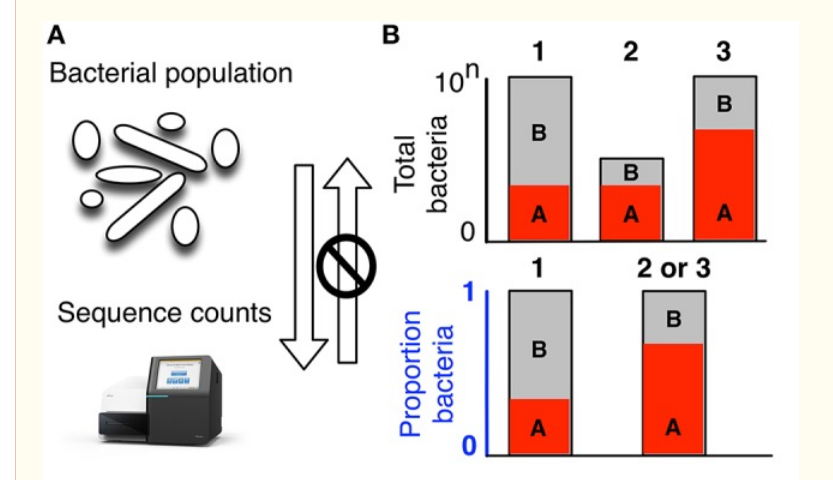
Normalizing library size?
Bias in compositional data:
- If sample A has been sampled deeper than sample B, also the counts can be expected to be higher.
Possible solutions:
Divide by the total number of reads per sample (compositional abundance)
Rarify (subsample) to even sampling depth
→ Problem: Abundant taxa may distort the ratios
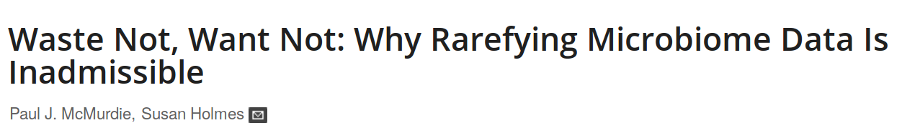
Relative vs. absolute abundances
-> Compositional data analysis (CoDa)
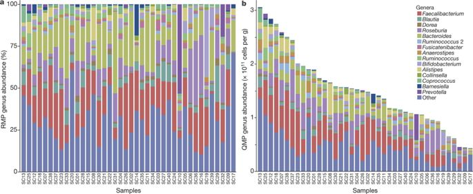
RMP vs. QMP
Potentially drastic effect on conclusions!
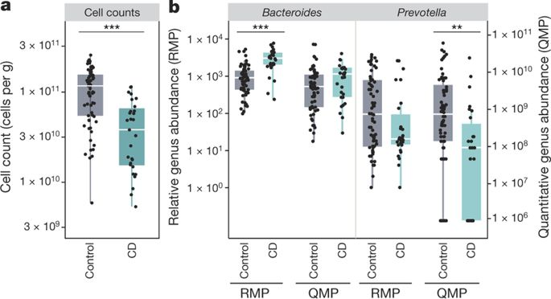
Abundance along the community landscape
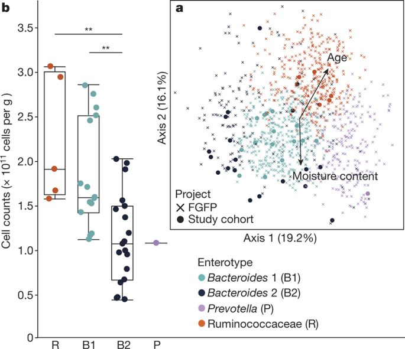
Aitchison transformations (e.g. CLR)
Aitchison transformations are used to reduce compositional bias.
Balances, or ratios between taxa abundances, are conserved in compositional transformation: \(\frac{x}{y} = \frac{cx}{cy}\)
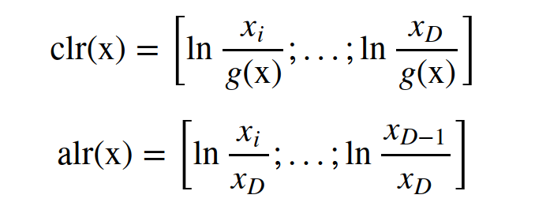
Transformations
- Count data
- Presence/absence
- Compositional (percentages)
- \(Log_{10}\)
- Aitchison family of transformations (CLR, ALR, ILR)
- Phylogenetic transformations (e.g. phILR)
- Custom transformations
Transformations
Create and add new assays in the data:
Phylogenetic transformations
- - there exists no single taxonomic resolution at which taxonomic variation unambiguously reflects functional variation, and at which environmental selection of certain functions - - unambiguously translates to a selection of specific taxa (Louca et al. 2018).
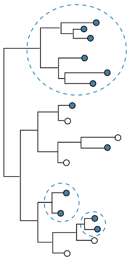
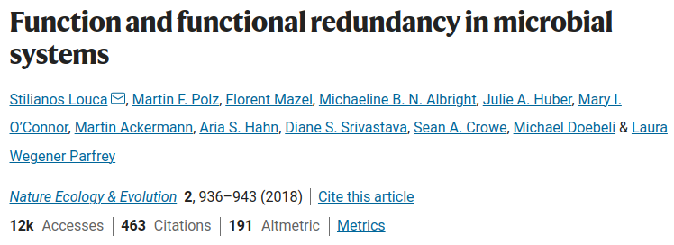
Phylogenetic balances: phILR transformation
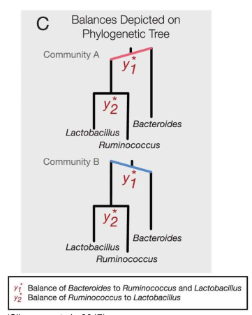
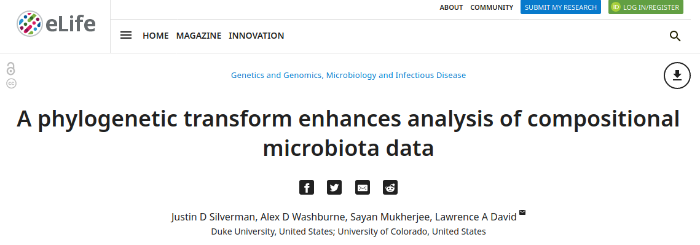
Phylogenetic balances as features for FLI predictions
(Based on phILR; Silverman et al. 2017)
Pathways in representative bacterial genomes of Clostridium subclusters IV and XIVa indicated the presence of e.g., ethanol fermentation pathways → endogenous ethanol producers associated with fatty liver?
In addition to age and sex, the models included differences in 11 microbial groups from class Clostridia, mostly belonging to orders Lachnospirales and Oscillospirales. Previously NAFLD-associated Clostridia XIVa group members were detected. Two species in Clostridia IV group were not previously associated with fatty liver disease.
Key associations validated in another Finnish cohort (N=258).
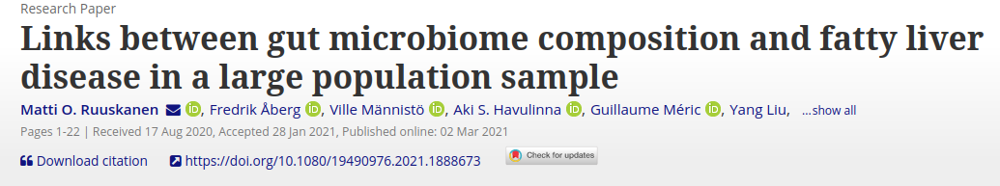
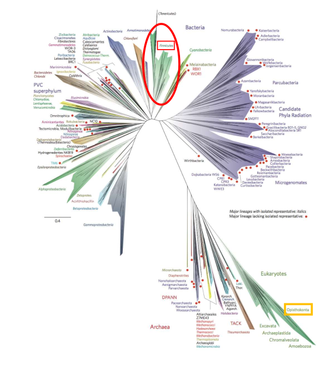
Optional task
- If the data has phylogenetic tree, perform the phILR transformation (e.g.
GlobalPatternsdata set in the mia R package)
Further tasks
If you complete the task fast, check out other OMA Exercises on data containers.